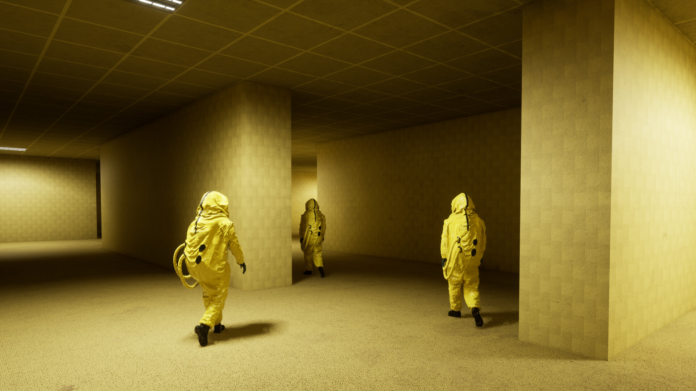
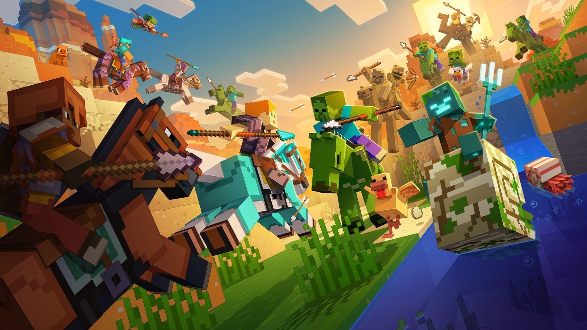

Online Games

"The Backrooms" is a psychological horror experience inspired by an internet creepypasta. It takes place in an endless maze of yellow, dimly lit office-like rooms with damp carpets and buzzing lights. The environment feels empty yet unsettling, creating a constant sense of being watched. Players often explore alone, trying to survive while navigating confusing, looping corridors. The game relies heavily on atmosphere rather than jump scares to create fear. Strange entities may lurk in the shadows, adding tension and unpredictability. Limited resources and unclear objectives make survival more stressful. The concept of “no-clipping” into this strange dimension adds a surreal element. Sound design—like distant footsteps or flickering lights—plays a big role in the horror. Each level can feel slightly different, making exploration both intriguing and dangerous. Overall, it's a unique horror experience focused on isolation, mystery, and psychological dread.

"Minecraft" is a popular sandbox game known for its blocky, pixel-style graphics. It allows players to explore a vast, procedurally generated world made of different biomes. Players can gather resources like wood, stone, and minerals to craft tools and items. The game offers multiple modes, including Survival, Creative, and Hardcore. In Survival mode, players must manage health, hunger, and defend against hostile mobs. Creative mode lets players build freely with unlimited resources and no danger. Iconic creatures like Creeper and Enderman add excitement and challenge. Players can construct anything from simple houses to massive cities and machines. Multiplayer mode allows friends to collaborate or compete in shared worlds. The game encourages creativity, exploration, and problem-solving. Overall, its a highly flexible game that appeals to both casual and dedicated players.

"Resident Evil" is a famous survival horror game series developed by Capcom.
It focuses on outbreaks of deadly viruses that turn humans into zombies and monsters.
Players often take on the roles of characters like Leon S. Kennedy or Jill Valentine.
The gameplay combines exploration, puzzle-solving, and intense combat.
Limited ammo and resources create tension and force careful decision-making.
Many games are set in creepy locations like mansions, cities, and laboratories.
The series is known for its cinematic storytelling and memorable villains.
Jump scares and atmospheric horror are key parts of the experience.
Different entries vary between slow survival horror and more action-focused gameplay.
The storyline often revolves around the sinister Umbrella Corporation.
Overall, its a classic horror franchise that blends action, mystery, and suspense.